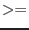
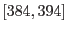

tcsfix: Time Correlation Spacecraft file FIXing task
SYNOPSIS
tcsfix [clonetcs=yes|no] [rerun=yes|no]
DESCRIPTION
This task fixes a number of distinct problems in ODF time correlation data:
Due to wrong ground station and spacecraft time propagation delays
hardcoded in XSCSv71 all time correlation files
produced with these XSCS versions contains too small UTC values.
The absolute error is - depending slightly on the GS ID - of the
order of 60ms. In addition some of the early TCS files do not
contain the ERTIMRAW column that hold the non-propagation delay
corrected earth reception times. Also, some early TCS have bogus
entries with UTCDAY=0 - those rows are removed from the table.
During revolutions 384 - 394 (both inclusive) the Santiago
ground station clock was running exactly one second ahead of
UTC. Consequently, the time correlation data show a corresponding
discontinuity at the time of a station handover to Santiago (GSID==41).
During several periods in 2002 timing data from the Kourou
ground station showed various anomalies which manifests themselves
as discontinuities at the time of a handover to/from this station.
tcsfix does:
${}$
remove rows where UTCDAY=0
${}$
add the ERTTIMRAW column to the TCS unless it exists already
C1
if (rev < 207)
undo the wrong propagation delays to all UTC fields
and applies the correct delays
C2
if (rev  384 && rev 394)
subtract 1s to UTC data from Santiago station
C3
if (observation start/end time lies in a Kourou bad-time window)
correct anomalies
${}$
adds attribues
TCSFIXED = T // this TCS has been fixed TCSFIXV = M.m.p // tcsfix version number TCSFIXC = id // numerical code of applied corrections
C1 is only done if the revolution number is less than 207
(XSCS-v72 was put online at the beginning of rev 207); C2 is only done for
ODFs from revolutions ;
C3 is only done if observation start/end time lies within affected
time windows. C1/C2/C3 are not performed if the attribute
TCSFIXC indicates that these corrections have been applied already
in a previous run (to avoid double-correction through repeated
invocations of tcsfix. Each set bit in TCSFIXC stands for one
distinct applied correction, i.e. TCSFIXC=0 indicates that the data has
not been modified.